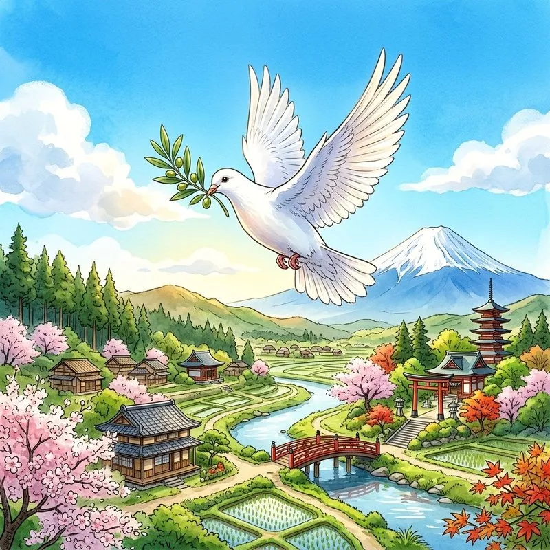

35. 現代社会の課題とこれからの日本
冷戦が終わり、21世紀を迎えた日本と世界は、新しい形の様々な課題に直面しています。自然災害の脅威や、社会の構造変化、そして地球規模の環境問題など、私たちは歴史の延長線上に生きています。最終章となる今回は、現代日本の大きな出来事と課題を整理し、歴史を学ぶ意義について考えていきましょう！
1. 二つの大震災と防災への歩み
日本は位置的・地質的に地震が多い国であり、戦後も大きな震災を経験し、その教訓をもとに防災や社会活動の仕組みを変えてきました。
① 阪神・淡路大震災（1995年）
1995年1月17日、兵庫県南部を震源とするマグニチュード7.3の直下型地震が発生しました。大都市のビルや高速道路が倒壊し、木造住宅の密集地で大規模な火災が発生するなど甚大な被害をもたらしました。
※この震災では、日本全国から多くのボランティアが自発的に駆けつけて被災者の支援活動を行いました。この年から日本でボランティアの重要性が広く認識されたため、1995年は「ボランティア元年」と呼ばれています。
② 東日本大震災（2011年）
2011年3月11日、東北地方太平洋沖を震源とするマグニチュード9.0という日本観測史上最大の巨大地震が発生しました。大津波が太平洋沿岸を襲い、多くの街が壊滅的な被害を受けました。
津波は東京電力の福島第一原子力発電所を襲い、全電源が喪失してメルトダウン（炉心溶融）および放射性物質の漏洩という深刻な原子力発電所事故を引き起こしました。この震災は、エネルギー政策の見直しや、人と人との「絆（きずな）」、日頃からのハザードマップ確認といった防災意識を大きく変えました。

図1：被災からの復興と、持続可能で災害に強いまちづくりを進めるイメージ
2. 現代社会の４つの急激な変化
私たちの暮らしは、かつてないスピードで変化しています。公民の教科書でも繰り返し学ぶ、極めて重要な４つのキーワードです。
① 少子高齢化（しょうしこうれいか）
医療の進歩などで平均寿命が伸びて高齢者の割合が高まる（高齢化）一方で、生まれる子どもの数が減る（少子化）現象。労働力不足や、年金・医療などの社会保障費の負担増が深刻です。
② 情報化（じょうほうか）
インターネットやスマートフォン、AI（人工知能）の普及により、誰もが瞬時に世界中の情報を入手・発信できるようになりました（高度情報社会）。一方で、デマの拡散やネットいじめ、情報セキュリティなどの「情報モラル」が課題です。
③ グローバル化
国境を越えて、人、モノ、お金、情報が自由に活発に行き来し、世界の一体化が進むこと。世界的な競争が激しくなる一方、異なる文化や宗教を理解し合って生きる「多文化共生（たぶんかきょうせい）」が求められます。
④ 地球温暖化と環境問題
二酸化炭素などの温室効果ガスの増加により、地球の気温が上昇し、異常気象や海面上昇を引き起こしている問題。二酸化炭素を出さない再生可能エネルギーの導入や、持続可能な開発目標（SDGs）への取り組みが世界中で行われています。
3. 歴史を学ぶ意義とこれからの社会
これで、日本の古代から現代までの歴史のコラムはすべて終了です。最後に、なぜ私たちは歴史を学ぶのでしょうか？
歴史を学ぶ最大の意味は、「過去の出来事を教訓にして、いま生きる私たちの課題を解決し、未来をより良くするため」です。現代の多くの国際紛争や社会問題は、すべて過去の歴史的背景とつながっています。歴史を知ることで、他国や他者の立場を理解し、広い視野を持つことができます。
日本は、人類史上唯一の戦争被爆国として、憲法の平和主義を掲げ、世界の平和維持に貢献する責任があります。過去の歴史を正しく学び、対立ではなく対話によって解決する社会を、これからの私たちが作っていかなければなりません。

図2：異なる文化を持つ人々が手を取り合い、平和な地球の未来を創るイメージ
🔥 この単元のテスト対策・暗記のコツ
-
★
２つの大震災の年号と特徴：
・1995年 ＝ 阪神・淡路大震災（ボランティア元年の語句がよく出ます）。「救急（1995）出動、阪神大震災」
・2011年 ＝ 東日本大震災（原発事故、津波、防災意識の変化）。「津波で不意（2011）を突かれた東日本」 -
★
現代社会の課題キーワード（記述！）：
・少子高齢化、情報化、グローバル化、多文化共生、SDGsなどの定義と、それに伴う利点・課題を自分の言葉で説明できるように整理しておきましょう（公民の超頻出分野です）。 -
★
歴史を学ぶ意味についての作文・記述：
・「歴史を学ぶのはなぜか？」という記述問題が出た場合は、「過去の出来事や歴史的背景を学び、現代の課題を理解し、より良い未来の社会を創るための教訓にするため」とまとめると高得点になります！